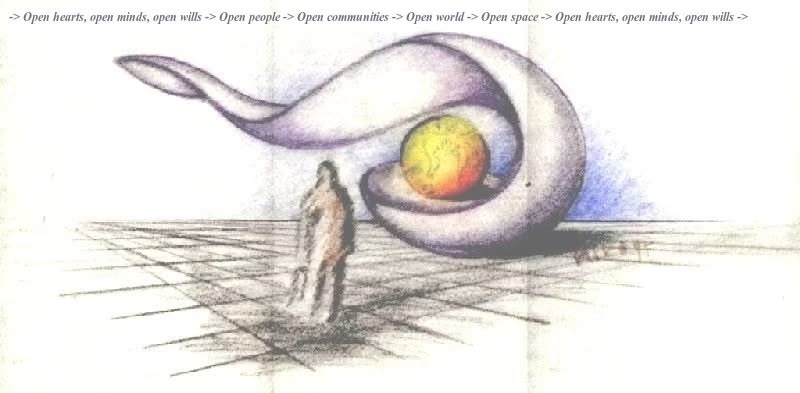

Inicializácia 3D plátna a modelu...

PREČO (300)
ČO (200)
AKO (100)
Preskúmajte šachty matice a jej presný stred. (Otcov diagram z roku 1975)
Tvorivosť je jedna z prirodzených vlastností človeka. Mnoho ľudí ale umrie bez toho, aby to objavilo, ale vo forme "zdravého sedliackeho rozumu" ho mnohí používajú.
Úroveň 1: List predkom a odkaz budúcim generáciám
Tento priestor nie je obyčajnou webovou stránkou. Je to list mojim predkom a trvalé posolstvo rodine, priateľom a spolutvorcom – tichý maják, ktorý tu zostane ako inšpirácia, aj keď ja sám už nebudem prítomný fyzicky.
V kánone LATVOMY2 neuvažujeme v uzavretej lineárnej priamke. Riadiacim princípom tvorby, remesla a učenia je samsarický cyklus poznania:
PREČO (Láska, 300) ⟶ ČO (Myslenie, 200) ⟶ AKO (Tvorivosť, 100) ⟶ Návrat na PREČO (300)
Zmysel a rodová etika (PREČO) sa pretavujú do konkrétnych didaktických rozhraní (ČO), ktoré v dielni narážajú na fyzický odpor materiálu a skrutiek (AKO). Hmotná skúsenosť následne spätne vyživuje a preveruje pôvodný zámer, presne ako opadané lístie v komposte vyživuje korene stromu.
- Varovanie Yuvala Noaha Harariho (Nexus): Umelá inteligencia je prvým samostatným aktérom v dejinách. Ak stratíme kontakt s fyzickou realitou a nekriticky odovzdáme rozhodovanie algoritmom, staneme sa „kravami budúcnosti“ – bytosťami na digitálnej pastve, ktoré vôbec nerozumejú finančným a dátovým trhom riadiacim ich život.
- Viktor Frankl a analógové ticho ($T_{off} = 30\text{ s}$): Sloboda človeka leží v priestore medzi podnetom a reakciou. V našom systéme preto technicky vymáhame 30-sekundovú Franklovu medzeru ($T_{off}$) – čas na stíšenie a overenie hypotézy bez dotyku displeja.
- Genealogická konvergencia koreňov (8 → 4 → 2 → 1):
1. Sedliacka vetva (Milhosť): Pradedovia a prababičky (Szakács, Cikó, Pataki, Zöld) zbiehajúci sa do matkinej línie. Rováš so zárezmi a truhlica na osivo z roku 1932, z ktorej sa nikdy nesmelo zjesť všetko, aby rodina prežila neúrodu a zimu.
2. Staviteľská olovnica (Streda nad Bodrogom): Murárski predkovia (Vaskó, Nagy, Rapcsák, Compoly) a otec stavbár-umelec Jozef Vaško (1932), ktorý v roku 1975 navrhol žltú sféru v ochrannej mušli. Murár nečaká na náhodu: berie olovnicu, overí zvislicu a stavia klenbu, ktorá nespadne.
„Každý má svoju pravdu. Mimoriadne si však vážim človeka, ktorý ma presvedčí, že jeho pravda je pravdivejšia než moja, lebo ma niečo naučil.“ (Motto n)
Úroveň 2: Ako udržať poriadok – Trojúrovňová logika a inteligencia koreňa
Mozog nedokáže naraz držať desiatky vetiev, úloh a nedozretých nápadov. Namiesto prehltenia meníme geometriu myslenia:
Úroveň 3: Čo staviame – UDP pre deti od 3 do 103 rokov
Pasca Spasiteľa: Po-moc ⟶ Moc nad druhým ⟶ Ne-moc (vyhorenie)
- UDP (Univerzálna Didaktická Pomôcka pre deti od 3 do 103 rokov):
Hmotná doska (150×150 mm s Hallovými senzormi SS49E a tvarovými pukmi) slúži ako hmatový trenažér myslenia. Odtrháva pozornosť od obrazoviek a vracia cit do prstov dieťaťu, dospelému aj seniorovi.
- Paralelná pomoc namiesto poúčania (Kostihoj / Knitbone):
Ak niekomu pomáhame zhora, vytvárame závislosť a sami vyhoríme. Ako Kostihoj aktéri si sadáme za spoločný stôl a medzi seba kladieme dosku UDP.
- Hmat ako rovnostár:
Nevidiaci človek alebo malé dieťa vníma jemným hmatom fyzikálny odpor magnetov skôr než dospelý unavený z monitorov. Individuálne obmedzenie uvoľňuje dar, ktorý pomáha celej skupine.
- Zvrchovaná domáca strojovňa:
Všetky zmluvy bežia na lokálnom serveri bez syntetických príkras a halucinácií (pravidlo
allow_synthetic_fill: false na portoch :8085 a :30080).
📝 Dotazník pre rodinu, priateľov a spolutvorcov
Tento priestor tvoríme spoločne. Budem vďačný za akýkoľvek tvoj postreh, nápad na zjednodušenie pomôcky UDP, alebo myšlienku, ktorú by si rád zanechal v našom rodovom archíve.
Overené pramene pre rodinu a priateľov:
1. Szint: Levél az ősökhöz és üzenet az eljövendő nemzedékeknek
Ez a felület nem csupán egy weboldal. Ez egy levél az őseimhez, és maradandó üzenet a családomnak, barátaimnak és alkotótársaimnak – egy csendes világítótorony, amely inspirációként itt marad akkor is, amikor én magam fizikailag már nem leszek jelen.
MIÉRT (Szeretet, 300) ⟶ MIT (Gondolkodás, 200) ⟶ HOGYAN (Alkotás, 100) ⟶ Visszatérés a MIÉRT-hez (300)
- Yuval Noah Harari figyelmeztetése (Nexus): A mesterséges intelligencia a történelem első önálló cselekvője. Ha elszakadunk a kézzelfogható valóságtól, a „jövő teheneivé” válunk, békésen legelészve anélkül, hogy értenénk a sorsunkról döntő algoritmusokat.
- Viktor Frankl és az analóg csend ($T_{off} = 30\text{ s}$): A szabadság az inger és a válasz közötti térben él. Rendszerünkben tudatosan bevezetjük a 30 másodperces Frankl-rést ($T_{off}$), amikor a kéz elengedi a gépet, és a lélek visszanyeri nyugalmát.
- Családi gyökerek összefutása (8 → 4 → 2 → 1):
1. Földműves ág (Migléc / Milhosť): Dédnagyszülők (Szakács, Cikó, Pataki, Zöld) és a rovásfa az 1932-es vetőmagos ládával.
2. Építőmesteri vonal (Bodrogszerdahely / Streda nad Bodrogom): Kőműves ősök (Vaskó, Nagy, Rapcsák, Compoly) és Vaskó József édesapa (1932), aki 1975-ben megrajzolta az óvó kagylóban nyugvó sárga gömböt.
„Mindenkinek megvan a maga igazsága... De különösen becsülöm azt, aki meggyőz arról, hogy az ő igazsága igazabb, mert tanultam tőle.” (n-edik mottó)
2. Szint: Rend a dzsungelben – Háromértékű logika és a mélygyökér
- Háromértékű logika (Szetuny gép {-1, 0, +1}):
{-1: Ellenállás} ←→ {0: Otthon / Frankl-rés T_off} ←→ {+1: Fény / Növekedés}. A nulla a stabil Otthon ($Z = 0$).
- A harmadik, mélyre hatoló MIÉRT-gyökér:
A húszas években kibomló korona megjelenésével párhuzamosan a fa egy függőleges gyökeret növeszt a talajba, amely a filozófiai értelem szilárd alapját adja.
3. Szint: UDP – Egyetemes Didaktikai Eszköz 3-tól 103 éves korig
- UDP (Egyetemes Didaktikai Eszköz 3-tól 103 éves korig):
Kézzelfogható tábla (150×150 mm mágneses korongokkal), amely a gondolkodás tapintásos edzőtere. Elvonja a figyelmet a képernyőkről, és visszahozza az ujjak finom érzékelését.
- Mellérendelt segítség (Fekete nadálytő / Knitbone):
Egy közös asztalhoz ülünk le, és az UDP táblát helyezzük magunk közé egyenlő felekként.
Level 1: Letter to Ancestors and Message to Future Generations
This space is not an ordinary website. It is a letter to my ancestors and an enduring legacy for my family, friends, and co-creators—a quiet beacon that will remain as inspiration even when I am no longer physically present.
WHY (Love, 300) ⟶ WHAT (Mind, 200) ⟶ HOW (Creativity, 100) ⟶ Return to WHY (300)
- Yuval Noah Harari's Warning (Nexus): AI is history's first autonomous agent. Relinquishing critical discernment turns us into the "cattle of the future".
- Viktor Frankl & Analog Silence ($T_{off} = 30\text{ s}$): Freedom lives in the space between stimulus and response. We technically enforce a 30-second Frankl Gap ($T_{off}$).
- Ancestral Convergence (8 → 4 → 2 → 1):
1. Peasant Lineage (Milhosť): Tally stick and the 1932 seed chest preserved through every crisis.
2. Builder's Precision (Streda nad Bodrogom): Stonemason ancestors and father Jozef Vaskó (1932) who drafted the 1975 yellow sphere inside the protective shell.
Level 2: Ordering the Jungle – Balanced Ternary & Deep Taproot
- Balanced Ternary (Setun {-1, 0, +1}):
{-1: Resistance} ←→ {0: Home / Frankl Gap T_off} ←→ {+1: Ascent / Light}.
- The Deep Taproot of WHY:
As the canopy branches out in early adulthood, a vertical taproot plunges into the subterranean realm, anchoring the whole architecture in purpose.
Level 3: UDA – Universal Didactic Aid for Learners from 3 to 103
- UDA (Universal Didactic Aid for Learners from 3 to 103):
A tactile board (150×150 mm with Hall sensors and magnetic pucks) that redirects attention from glowing screens back to physical reality and touch.
- The Knitbone Actor: We collaborate as equals at a shared table around the tactile UDA interface.
Ebene 1: Brief an die Ahnen und Vermächtnis für künftige Generationen
Dieser Raum ist keine gewöhnliche Website. Es ist ein Brief an meine Ahnen und ein bleibendes Vermächtnis für meine Familie, Freunde und Weggefährten – ein stilles Licht, das auch dann Orientierung schenkt, wenn ich selbst physisch nicht mehr da bin.
WARUM (Liebe, 300) ⟶ WAS (Denken, 200) ⟶ WIE (Schöpferkraft, 100) ⟶ Rückkehr zum WARUM (300)
- Yuval Noah Hararis Mahnung (Nexus): KI ist der erste eigenständige Akteur. Ohne Erdung werden wir zu den „Kühen der Zukunft“ auf digitalen Weiden.
- Viktor Frankl und die analoge Stille ($T_{off} = 30\text{ s}$): Die Freiheit liegt im Raum zwischen Reiz und Reaktion. Unser System erzwingt ein 30-Sekunden-Zeitfenster der Ruhe.
- Ahnen-Konvergenz (8 → 4 → 2 → 1):
1. Bäuerliche Linie (Milhosť): Das hölzerne Kerbholz und die Getreidetruhe von 1932.
2. Baumeisterlinie (Streda nad Bodrogom): Maurer-Vorfahren und Vater Jozef Vaskó (1932) mit der gelben Sphäre von 1975.
Ebene 2: Ordnung im Dschungel – Ternäre Logik und Tiefenwurzel
- Symmetrische ternäre Logik (Setun {-1, 0, +1}):
Das Zentrum ($0 = \text{Daheim}$) überwindet das Schwarz-Weiß-Denken.
- Die senkrechte WARUM-Tiefenwurzel:
Mit der Entfaltung der Krone wächst eine kräftige Wurzel tief in den Urgrund, um dem Ganzen Halt zu geben.
Ebene 3: ULM – Universelles Lernmittel für Kinder von 3 bis 103 Jahren
- ULM (Universelles Lernmittel für Kinder von 3 bis 103 Jahren):
Ein haptisches Übungsfeld (150×150 mm), das die Aufmerksamkeit von Bildschirmen zurück in die Fingerspitzen holt.
- Befreiung aus der Helferfalle:
Partnerschaftliches Forschen am gemeinsamen Tisch des ULM.